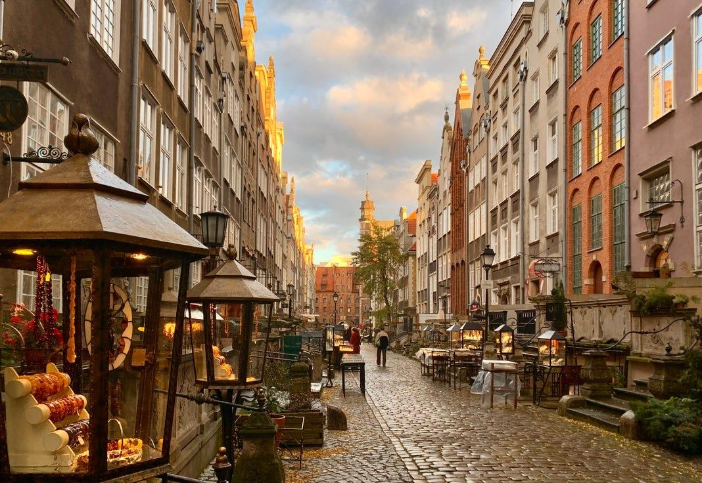
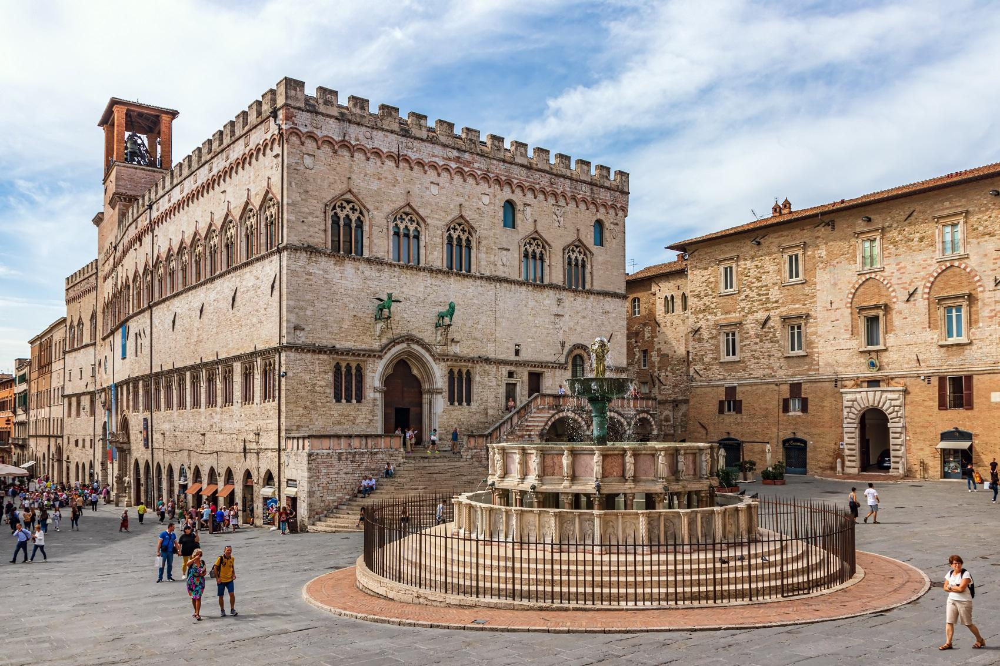
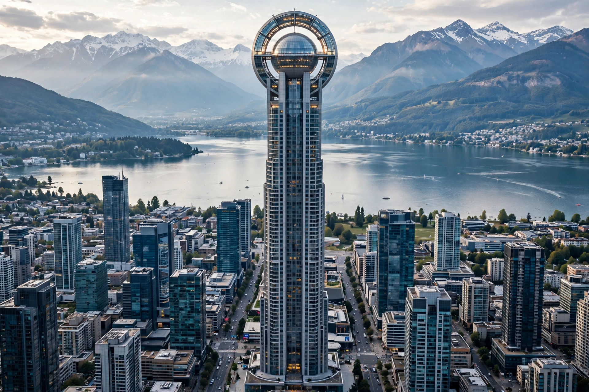

Ciudad: Valdoria
Pais: Republica de Arkenia
Poblacion: 1,8 Millones de habitantes
Ubicacion: En un valle rodeado de montañas, junto a un enorme lago.
Clima: Templado, con inviernos frios y veranos calidos.
Caracteristicas :
🏙️ Centro: Rascacielos modernos mezclados con edificios antiguos de piedra.
🌊 Lago Esmeralda: Atraviesa la ciudad y tiene un paseo costero enorme.
🚇 Transporte: Metro subterráneo y una red de tranvías eléctricos.
🌳 Parque de los Cedros: Un parque gigantesco en el centro, casi del tamaño de varios barrios.
🏰 Castillo de Valdoria: Antigua fortaleza situada sobre una colina, actualmente convertida en museo.
⚽ Estadio Aurora: Capacidad para 65.000 personas y sede del principal equipo de la ciudad, el Valdoria FC.
Barrios principales:
Centro Viejo



El Origen de Valdoria
Hace aproximadamente 1.200 años, un grupo de familias llegó a las orillas del Lago Esmeralda buscando un lugar donde establecerse. La región estaba rodeada de montañas y tenía tierras fértiles, abundante agua y una posición estratégica para el comercio.
Los primeros habitantes construyeron casas de madera y piedra cerca del lago. Se dedicaban a la pesca, la agricultura y el intercambio de mercancías con otros pueblos de las montañas.
El asentamiento recibió el nombre de Valdor, que en el antiguo idioma de la región significaba “valle protegido”.
Con el paso de los siglos, el pueblo creció. Se construyeron una plaza central, una iglesia, talleres de herrería y un mercado. Las calles eran estrechas porque se diseñaron para proteger a los habitantes del viento y de posibles ataques.
La Gran Expansion
En el año 1342, Valdor fue reconocido oficialmente como ciudad. Los comerciantes comenzaron a llegar desde lugares lejanos, trayendo telas, metales, especias y libros.
La plaza central se convirtió en el corazón de la ciudad. Allí se celebraban ferias, festivales y reuniones políticas. Muchas de las casas de piedra que todavía existen hoy fueron construidas durante esa época.
La Actualidad
Hoy, el Centro Viejo es el barrio más visitado de Valdoria. Sus calles conservan las fachadas antiguas, aunque en su interior hay cafeterías, librerías, restaurantes y pequeños negocios.
Distrito Aurora


El Nacimiento de la Ciudad Moderna
Durante siglos, Valdoria fue una ciudad comercial relativamente pequeña. Todo cambió en 1898, cuando se descubrieron grandes reservas de minerales en las montañas cercanas.
La explotación minera generó enormes cantidades de dinero y atrajo a miles de personas. Se construyeron fábricas, estaciones de tren, bancos y grandes edificios.
La ciudad comenzó a expandirse más allá de sus murallas antiguas.
En 1926, un grupo de arquitectos presentó un proyecto para construir una zona completamente nueva. El objetivo era crear un distrito que representara el futuro de Valdoria.
La Crisis del Siglo XX
Durante la década de 1970, el Distrito Aurora sufrió una gran crisis. Varias fábricas cerraron y muchas familias perdieron sus empleos. Algunos edificios quedaron abandonados y la zona comenzó a deteriorarse.
Sin embargo, en 1984, el gobierno de la ciudad lanzó un plan de renovación urbana. Se construyeron nuevos edificios, universidades, centros de investigación y espacios públicos.
En las décadas siguientes llegaron empresas de tecnología, bancos internacionales y compañías de transporte.
El Distrito del Futuro
En la actualidad, Aurora es el centro económico de Valdoria. Sus rascacielos albergan empresas, oficinas y centros de innovación.
El edificio más famoso es la Torre Aurora, de 312 metros de altura. Fue inaugurada en 2018 y tiene un mirador desde el que se puede observar todo el Lago Esmeralda.
En la cima hay una enorme estructura circular que se ilumina de distintos colores durante las celebraciones de la ciudad.
Puerto Azul - restaurantes, mercados y el paseo del lago.
Las Colinas - barrios residenciales de clase media-alta.
Barrio Ferroviario - zona industrial reconvertida en un área artística y universitaria.